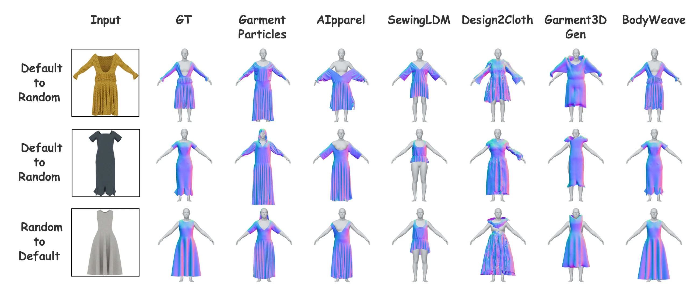
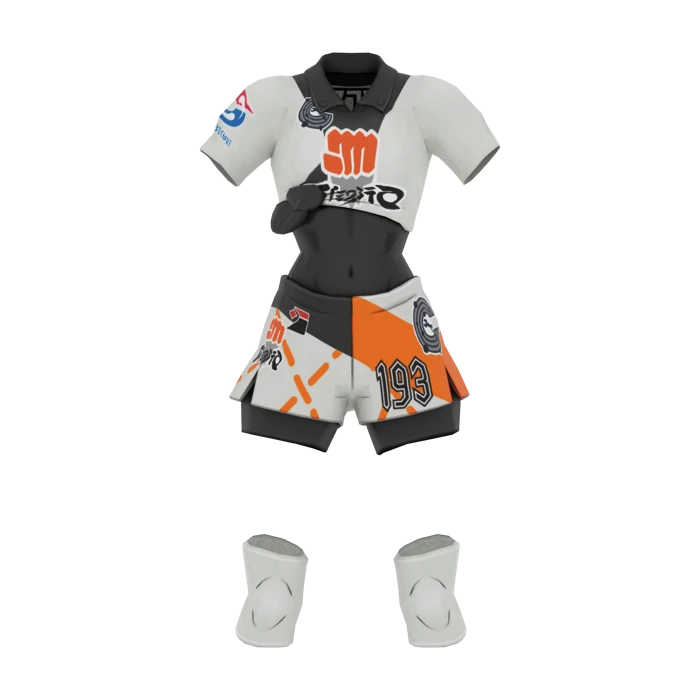
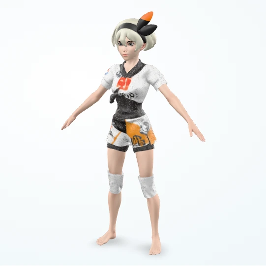
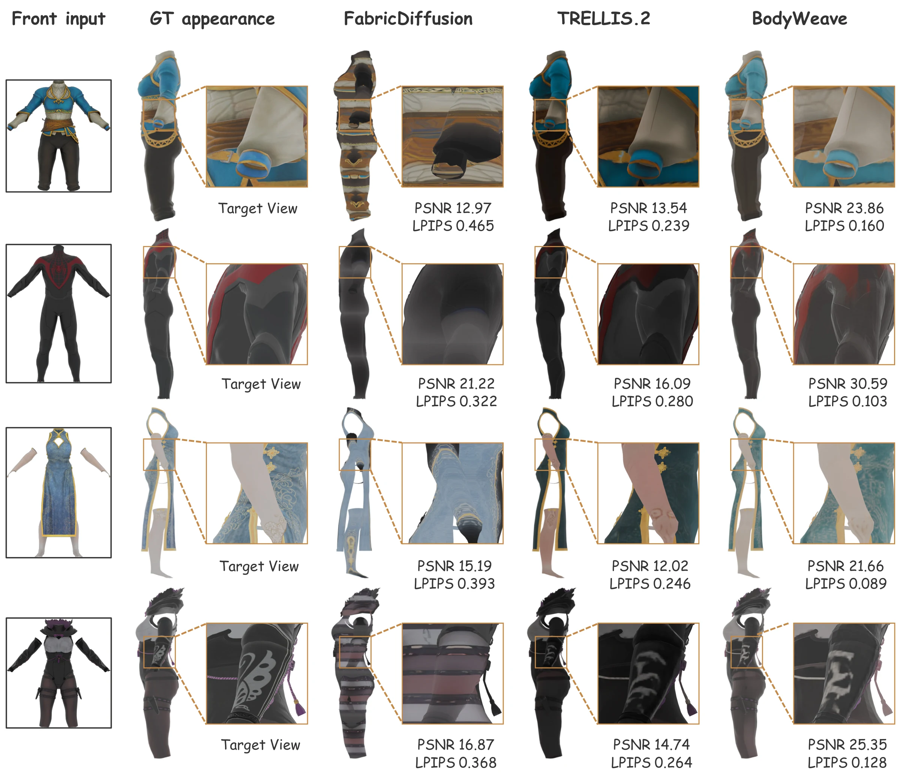
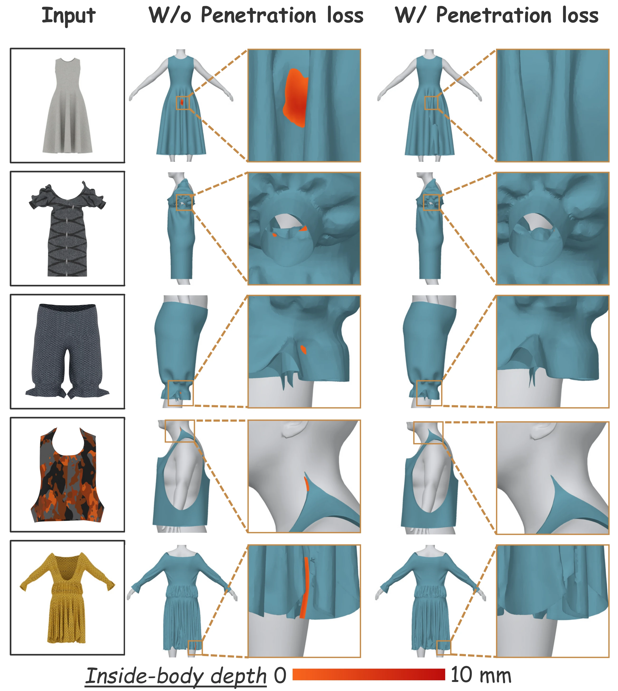
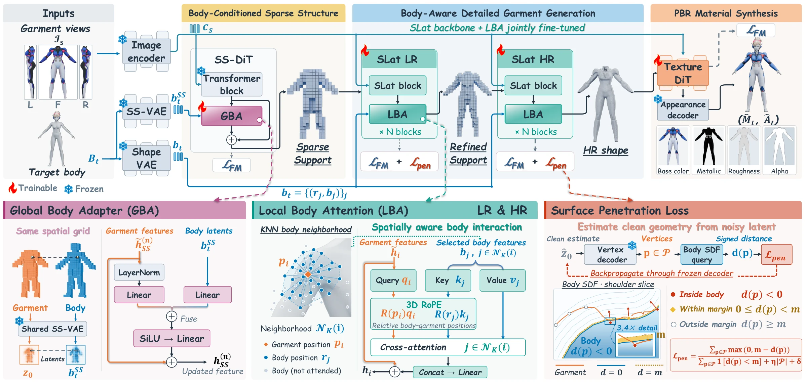
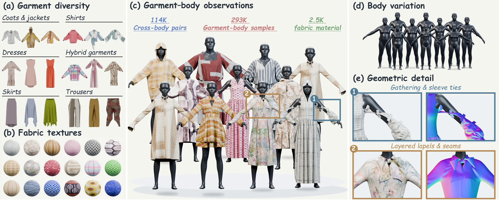
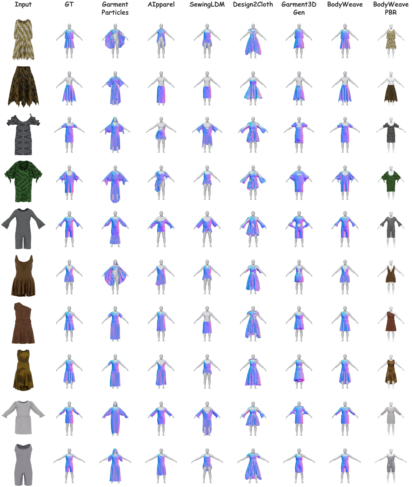

A
One design, different bodies
Keeping the source garment images fixed, BodyWeave adapts garment geometry to a new target body. The reference fit is obtained by simulating the same garment on that body.

Geometry, fit & appearance
From reference design to body-aligned garments.
Generate geometry and material appearance with the wearer in mind.
The idea
Creating garments for digital characters calls for both design fidelity and a fit that follows the wearer. BodyWeave unifies generation and fitting by using the target body as a spatial reference throughout geometry generation. The resulting geometry then guides material synthesis for physically based rendering.
01 / Explore in 3D
Explore BodyWeave results on Artist-Created Garments. Rotate each example to inspect garment geometry, body fit, and PBR appearance.
Reference image

BodyWeave output
Bea
Choose a garment and select Explore in 3D. Drag to rotate; scroll or pinch to zoom.
02 / Design, fit & detail
From adapting a garment to another wearer to reproducing the texture of its fabric.
Keeping the source garment images fixed, BodyWeave adapts garment geometry to a new target body. The reference fit is obtained by simulating the same garment on that body.

Body-conditioned geometry provides the foundation for material synthesis. Held-out views and detail crops compare generated appearance with the reference.

Surface penetration supervision reduces intersections between the generated garment and its wearer. The comparison visualizes intersection depth with and without this supervision.

03 / Method
Given three reference garment views and a target body, BodyWeave builds garment geometry directly in the body's coordinate frame.

Establishes garment placement and extent through body-aligned sparse support.
Guides surface refinement with nearby body geometry at low and high resolutions.
Supervises decoded surfaces to reduce intersections between garment and body.
04 / Dataset
Aligned garment–body observations support learning across garment designs and wearers.

05 / Full comparisons
Extended results from the supplementary material, across dataset garments and artist-created designs.
